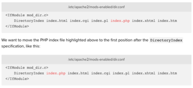

Install Piwik On Linux
Need to create an analytics server for the mobile app I made. I choose Piwik to self-host all the data in my own server. This is the full notes I made during the setup.
Create Server
The server I use is form digital ocean. Operating system is Ubuntu. I created a Linux droplet from digital ocean.
Server “LAMP” Install
First login to server using the default password. Then change the password and re-login to the server.
Then follow this guild to install. The guild is included in this documentation.
Install Apache and Allow Firewall
1 | sudo apt-get update |
Set Global ServerName to Suppress Syntax Warnings
Use the following command to check the Apache config syntax. If you do not set the server name, there will be a warning.
1 | sudo apache2ctl configtest |
Now in order to surpass the warning, we need to go to following file and add ServerName variable to it.
1 | sudo vim /etc/apache2/apache2.conf |
Go to the end of the file and add the following line.
1 | ServerName server_domain_or_IP |
For server_domain_or_IP If you have a domain name, use the domain name there. If not, use the ip address for the server.
Now we can retest the config and it will only return Syntax OK. Now restart Apache.
1 | sudo systemctl restart apache2 |
Adjust the Firewall to Allow Web Traffic
When following the guide it talks about allow UFW firewall for both HTTP and HTTPS traffics. First make sure that UFW has an application profile for Apache:
1 | sudo ufw app list |
And we should get the following result:
1 | #Output: |
If look at Apache Full profile, it should show that it enables traffic to ports 80 and 443:
1 | sudo ufw app into "Apache Full" |
Here is the result
1 | # Output |
Now we need to allow incoming traffic for this profile:
1 | sudo ufw allow in "Apache Full" |
Now we can do a spot check right away to verify that everything went as planned by visiting your server's public IP address in web browser
1 | http://your_server_IP_address |
You can see a default Ubuntu Apache web page. Now your web server is correctly installed and accessible through the firewall.
Install MySQL
Now that we have our web server up and running, it is time to install MySQL.
1 | sudo apt-get install mysql-server |
When installation is complete, we want to run a simple security script that will remove some dangerous defaults and lock down access to our database system a little bit. Start the interactive script by running:
1 | mysql_secure_installation |
We can enter database manually using following command.
1 | mysql -p |
At this point, the database system is now setup and we can move on.
Install PHP
Use the following command to install PHP
1 | sudo apt-get install php libapache2-mod-php php-mcrypt php-mysql |
Now we want to make Apache first look for index.php.
1 | sudo vim /etc/apache2/mods-enabled/dir.conf |
Look for index.php, move it to the first place like image below.

Now restart Apache
1 | sudo systemctl restart apache2 |
Install PHP Modules
Currently I don’t know what additional modules we need to install, so I will leave this empty for now. Will adding content to here if anything I found is necessary.
Test PHP
Now finally, we need to test that php we installed works. Here is how. Add a info.php under the web document directory to print out php information.
1 | sudo vim /var/www/html/info.php |
Now save and close file. Visit http://server_ip/info.php. It will show a php info page.
Finished
Now we have finished install LAMP stack.
Change Default WWW Directory
In case that you want to change config to a different directory, this guide can be useful.
Right now the default directory is /var/www/html. I think it does not need to change that default directory. So has not tired that guide yet.
Install Piwik
Download Piwik zip file and upload to server and unzip. If you want to visit analytic site using default address, unzip everything under root. Do not need to have Piwik directory there. If you want to visit site under https://ip/piwik, then keep the piwik folder and all files goes under that folder.
Now visit the site. You will see an error occurred. We need to set the permission for the folder. Just follow the instruction will be fine. Note there are 7 lines there. Do not paste them at once. Do it one by one. You might find that some directory not exists. That might be normal. I have this issue on test build as well.
After set permissions, refresh site.
Error Solving
At this stage, when go to the self-hosted Piwik site, we should be able to see the install wizard when accessing the site. http://server_ip
Press NEXT and solve all the errors display in this page.
mbstring
Open php.ini
1 | # find config path using |
Install php-mbstring plugin
1 | apt-get install php-mbstring |
Now restart Apache
1 | sudo systemctl restart apache2 |
Dom & Simple XML
Install dom extension
1 | apt-get install php-dom |
Install simple xml extension
1 | apt-get install php-simplexml |
Now restart Apache
1 | sudo systemctl restart apache2 |
Database Setup
Create a local database user
1 | #login to mysql root |
Create a database for piwik
1 | #login to mysql root |
Now enter the user, password, database name you just created into the website wizard database setup area.
Now give permission to newly created user piwik
1 | #login to mysql root |
Now press next, should have no problem and will lead to next page with table create success message.
Setup a Website
Website name should be application id in android app or bundle id in iOS app.
Website URL can be anything.
Website time zone is Toronto.
Not an Ecommerce site.
Setup SSL
If press the setting icon you can see a warning saying using HTTP can be risky, recommend setup using SSL. There are two ways to setup SSL, self-assign for the test server or use a real certificate.
Currently I am building the piwik on a test server and I do not have the certificate for my company. So I self-assign one for temporary use. I plan to replace the company certificate after I got to office on Monday.
Self Assign
I was following this guide to create and self assign the certificate.
Generate Private Key
Create RSA private key.
1 | openssl genrsa -des3 -out server.key 1024 |
Enter the PEM pass phrase. Create the password for that. Already written inside lastpass notes section.
Generate a CSR
Self-assign CSR.
1 | openssl req -new -key server.key -out server.csr |
There are several key point that needs to pay attention to when generate the CSR.
- Common Name: this needs to be the server's hostname. if the website address is https://public.akadia.com, then common name will be
public.akadia.com - A challenge password: Create another password for this field. This is noted inside lastpass as well.
Remove Passphrase from key
One downside is every time Apache starts up, it will ask to enter the pass-phrase. This is very inconvenient. We can remove pass-phrase using the following command.
1 | cp server.key server.key.org |
Something needs to notice: after removing the pass-phrase, the private key file should only be readable from the root user. which means its user permission should be -rw-r--r-- user and user group should both be root. This should be the default case. Another thing is if anyone else get the private key, it will be very dangerous, we should revoke the key.
Generating Self-Signed Certificate
Now we want to generate a self-signed certificate. Because this is a test server and I don't plan to have certificate signed by a CA. If you are waiting the certificate signed by a CA, you can self-signed first to test the SSL setup.
1 | openssl x509 -req -days 365 -in server.csr -signkey server.key -out server.crt |
Enable Apache SSL Module
Take a look to make sure SSL Module has not enabled. If already enabled, we can skip this section.
1 | ll /etc/apache2/mods-enabled |
If ssl.conf and ssl.load are there, then it is already enabled, if not, take a look at /etc/apache2/mods-available. If those two files are there, then mod_ssl is installed. What we need to do is just enable it using the following command.
1 | a2enmod ssl |
Now restart server using sudo systemctl restart apache2.
Config Apache to Accept Certificates
Move generated .crt files and .key files to /etc/ssl/crt.
vim /etc/apache2/mods-enabled/ssl.conf, append following to the end of file.
1 | <VirtualHost 138.197.161.209:443> |
Several things needs to be noted. The server name can be different. If we have a domain name, use the domain name for ServerName.
SSLCertificateChainFile can be omitted if the certificate is self-assigned. This should be the intermediate certificate file (if any) that was supplied by the certificate authority (CA).
Make sure the DocumentRoot is correct directory that you host the website.
Now, restart the Apache using sudo systemctl restart apache2.
Additional Setup
Here is some additional setup that is preferred to setup on the Piwik server.
Force SSL
There are two ways to force SSL connection. See here for details. One is to install Force SSL plugin inside the market place. The second is to set force_ssl = 1 inside piwik/config/config.ini.php file